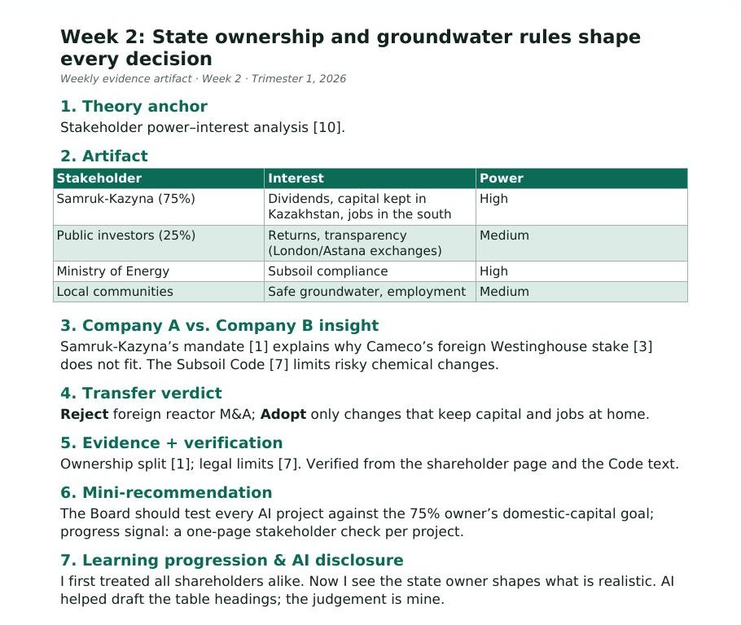

Week 2: State ownership and groundwater rules shape every decision
1. Theory anchor
Stakeholder power–interest analysis [10].
2. Artifact

| Stakeholder | Interest | Power |
|---|---|---|
| Samruk-Kazyna (75%) | Dividends, capital kept in Kazakhstan, jobs in the south | High |
| Public investors (25%) | Returns, transparency (London/Astana exchanges) | Medium |
| Ministry of Energy | Subsoil compliance | High |
| Local communities | Safe groundwater, employment | Medium |
3. Company A vs. Company B insight
Samruk-Kazyna’s mandate [1] explains why Cameco’s foreign Westinghouse stake [3] does not fit. The Subsoil Code [7] limits risky chemical changes.
4. Transfer verdict
Reject foreign reactor M&A; Adopt only changes that keep capital and jobs at home.
5. Evidence + verification
Ownership split [1]; legal limits [7]. Verified from the shareholder page and the Code text.
6. Mini-recommendation
The Board should test every AI project against the 75% owner’s domestic-capital goal; progress signal: a one-page stakeholder check per project.
7. Learning progression & AI disclosure
I first treated all shareholders alike. Now I see the state owner shapes what is realistic. AI helped draft the table headings; the judgement is mine.